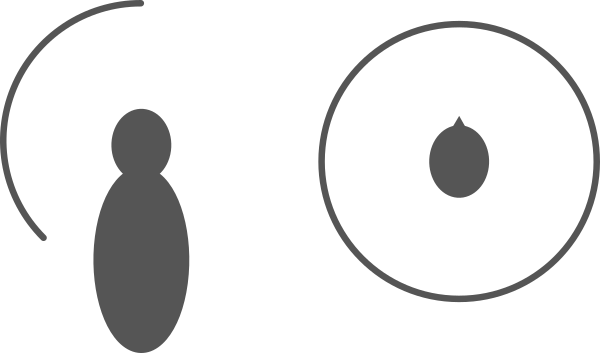

Create Binaural Sounds
With this app, you can make a sound which resembles it recorded in stereo with binaural microphones. Your WAV file recorded in stereo or monoral will be convolved with a Head-Related Transfer Function (HRTF).
This app does NOT upload your WAV file. Get HRTF from server and process in your local system.
HRTF
This app uses HRTFs measured by Itakura Laboratory and CIAIR.
http://www.sp.m.is.nagoya-u.ac.jp/HRTF/ : HRTF database -> HRTF data (2)
- Choose a File to Process
- Choose Sound Source Position
WAV file (16bit / 44100Hz / Stereo or Monoral)
Choose a file to process
Drop a file here

Download operation will take a lot of time.